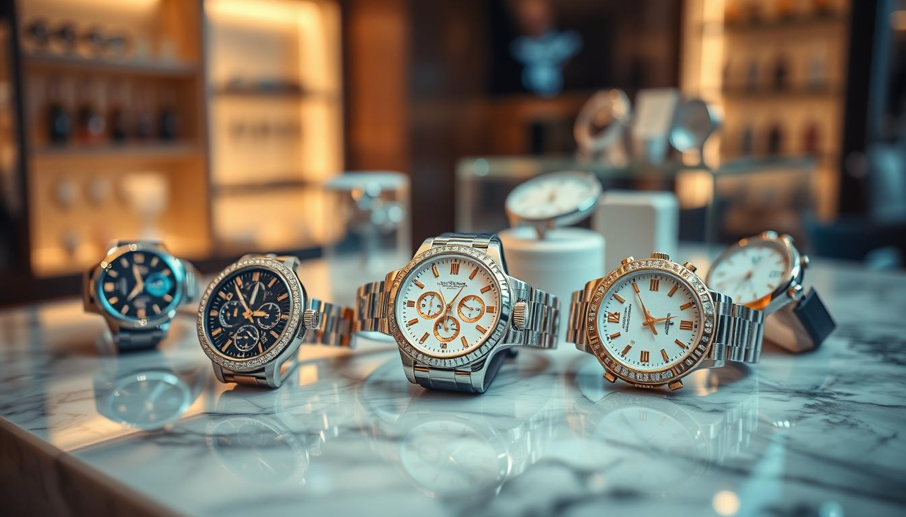

Innovation on Your Wrist : How Technology is Shaping the Future of Watches

Table of Contents
Technology has fundamentally transformed how we live, work, and communicate in modern society. With approximately 3.6 billion people worldwide still lacking internet access, there remains a significant digital divide to address.
Read More →Enhanced Communication and Connectivity: Technology has revolutionized how we connect, making global communication instant and accessible. Over 4.5 billion people now use social media worldwide, facilitating unprecedented levels of global interaction.
Read More →Technology, while a cornerstone of modern progress, has also brought about significant negative impacts. Technology has led to privacy breaches, increased social isolation, and mental health issues due to social media. It causes job displacement through automation, environmental harm from e-waste, and overdependence reducing critical thinking.
Read More →The watch industry has changed a lot with digital transformation. This has changed how luxury watches are made, marketed, and sold. The global watch market was worth USD 92 billion in 20224. It's expected to grow by 4.2% each year from 2023 to 20314.
Read More →The watch industry has changed a lot with artificial intelligence. It now offers better customer experience. Brands use AI chatbots for personalized help. They also have virtual try-on and augmented reality. This lets customers see watches in a new way.
Read More →The watch industry is now using digital showrooms and virtual try-ons. This makes shopping better and boosts sales. Augmented reality lets customers try watches online, cutting down on store visits. This tech boosts sales by 94% compared to items without it.
Read More →The watch industry has seen a big change towards online sales. Many brands now sell their products online to reach more customers. The COVID-19 pandemic helped this shift grow fast in the USA.
Read More →Smart inventory systems are changing the watch industry. They help manage stock better. This includes tracking stock in real-time and predicting what to stock up on.
Read More →In today's world, customer relationship management is key for businesses. They need to connect well with their customers. Digital tools help them offer personalized experiences making customers happier and more loyal.
Read More →Watch brands are using social media to connect with their audience and boost sales. The watch market is growing fast, expected to hit over $100 billion USD by 2025. It's key for brands to be online strong, especially on Instagram. About 75% of luxury watch buys are influenced by social media.
Read More →Mobile apps are now big in the watch world. Many brands have their own apps for easier and more fun shopping. These apps let you look at and buy watches. You can also get special deals and content.
Read More →The watch industry has changed a lot lately. Now, using data analytics and tracking consumer behavior is key for brands to keep up. Watch makers can learn a lot about what people buy and like. This helps them make better products, market smarter, and sell more.
Read More →Blockchain technology is making watch authentication safer and clearer. It helps prove if a luxury watch is real. Many people, 57%, worry about fake watches in the market. Blockchain can cut down fake goods by 95%, showing it's very effective.
Read More →Even though digital watch sales have many benefits, brands face several challenges. One big issue is giving customers a personalized shopping experience. This is hard because human interaction is limited online. Also, the risk of counterfeiting is high, especially for luxury watches.
Read More →Future Trends in Watch Industry Technology The watch industry is always changing. New technologies and trends keep coming. The luxury watch market is growing, attracting tech-savvy people while keeping its heritage. This change is because of the growing demand for smartwatches. These watches mix old-school mechanics with new tech like fitness tracking and GPS.
Read More →Technology has become a cornerstone of modern society, transforming communication, education, healthcare, and workplaces while reshaping economic and social landscapes. Despite its benefits, it introduces challenges such as privacy concerns, mental health impacts, and job displacement. Addressing these issues, along with the global digital divide, is crucial to ensuring that technological advancements contribute positively and equitably to the future.
The watch industry has changed a lot lately. This change is thanks to new technology. It helps with watch sales and makes things digital.Most people value unique and personal relationships with brands. This is true for all kinds of sales 1. Technology is changing how watches are made, sold, and marketed.By 2025, the luxury watch market will grow to $13.2 billion 2. AI is being used more in the luxury watch world. Over 30% of top brands are using AI in their work 3.
Technology has both good and bad sides in the watch world. Some people see a lot of value in online services 1. Blockchain helps keep watch history safe and true, cutting down on fake watches The watch world will keep using technology. The luxury watch market will grow, with more smart features wanted by brands 3.
Key Takeaways
- Technology has revolutionized communication, education, and healthcare, improving productivity and global connectivity.
- Challenges like mental health issues, job displacement, and cybersecurity concerns highlight the need for responsible technology use.
- Addressing the digital divide is essential to ensure equitable access to technological advancements worldwide.
- Technology is changing the watch industry, focusing on digital and sales.
- AI and blockchain are being used more in the industry23.
- 80% of people think they can offer a good customer experience but haven't done it yet1.
- The luxury watch market is expected to grow to $13.2 billion by 20252.
- AI is being used more in the luxury watch world, with over 30% of leading brands using it3.
- The watch industry will keep using technology, focusing on digital and sales.
Impact of Technology
Technology has fundamentally transformed how we live, work, and communicate in modern society. With approximately 3.6 billion people worldwide still lacking internet access35, there remains a significant digital divide to address. The technology market is projected to reach $5 trillion by 202537, demonstrating its massive economic influence. In today's digital landscape, technology has increased workplace efficiency by 30%, while 80% of American workers report enhanced productivity through technological tools35.
Positive Impact of Technology
Enhanced Communication and Connectivity: Technology has revolutionized how we connect, making global communication instant and accessible. Over 4.5 billion people now use social media worldwide36, facilitating unprecedented levels of global interaction.
Educational Advancement:
- 80% of students report significant benefits from online learning39
- 97% of teachers observe increased student engagement through technology40
- The online learning market is projected to exceed $375 billion by 202635
Healthcare Improvements: The healthcare technology sector is experiencing rapid growth, with a projected CAGR of 25.9% from 2021 to 202835. This growth has led to improved medical diagnostics, treatment options, and patient care.
Workplace Evolution:
- 67% of remote workers report improved communication with colleagues through technology39
- Cloud computing market has reached approximately $417 billion38
- Digital tools have enabled flexible work arrangements and increased productivity
Negative Impact of Technology
Technology, while a cornerstone of modern progress, has also brought about significant negative impacts. Technology has led to privacy breaches, increased social isolation, and mental health issues due to social media. It causes job displacement through automation, environmental harm from e-waste, and overdependence reducing critical thinking. Additionally, the digital divide exacerbates inequalities, leaving underprivileged communities without access to essential technological advancements.
Mental Health Concerns:
- 56% of individuals report that social media negatively impacts their self-esteem39
- Increased rates of anxiety, depression, and stress due to excessive technology use
- Technology addiction has become a growing concern among users of all ages
Employment Challenges:
- AI and automation are projected to displace 85 million jobs by 202536
- Growing concerns about job security in various sectors
- Need for continuous upskilling to remain relevant in the job market
Social and Physical Health Issues:
- Decreased face-to-face interaction and deepened feelings of loneliness
- Physical health problems including eye strain and poor posture
- Reduced physical activity and potential weight management issues
Security and Privacy Concerns:
- Increased cybersecurity threats and data breaches
- Rising instances of cyberbullying and online harassment
- Privacy concerns with personal data collection and usage
The Evolution of Watch Industry Technology
The watch industry has changed a lot with digital transformation. This has changed how luxury watches are made, marketed, and sold. The global watch market was worth USD 92 billion in 20224. It's expected to grow by 4.2% each year from 2023 to 20314.
Digital transformation is changing luxury watch design. AI uses algorithms to suggest new features based on market trends and what people like5. This has led to smartwatches with health monitoring and predictive features5.
New marketing strategies have also come with digital transformation. Virtual try-on experiences with AR technology let people see watches on their wrists from home5. Brands like Omega and Rolex use AR apps to show watches in different sizes and skin tones5.
The watch industry is getting more digital, making things more efficient and personal. As it grows, digital transformation will keep shaping luxury watches.
| Year | Global Watch Market Value (USD billion) |
|---|---|
| 2022 | 92 |
| 2023-2031 (projected) | growth at a CAGR of 4.2% |
Impact of Technology on the Watch Industry: A Modern Perspective
The watch industry has changed a lot with artificial intelligence. It now offers better customer experience. Brands use AI chatbots for personalized help 6.
They also have virtual try-on and augmented reality. This lets customers see watches in a new way7.
Independent watchmaking is growing fast. Brands like Rexhep Rexhepi and Simon Brette are in high demand7. Big names like Kari Voutilainen have long wait lists. They take deposits for watches well ahead of time7.
Technology, like artificial intelligence, is key. It helps improve customer experience and meet demand for watches.

The watch industry will keep changing. It will focus more on artificial intelligence and customer experience6. Brands must use technology to stay ahead7.
Digital Showrooms and Virtual Try-Ons
The watch industry is now using digital showrooms and virtual try-ons. This makes shopping better and boosts sales. Augmented reality lets customers try watches online, cutting down on store visits. This tech boosts sales by 94% compared to items without it8.
Virtual try-ons help in many ways. They keep customers interested, lower returns, and make buying more confident. A big 51% of shoppers want to use AR or VR to check out products8. Also, 40% of people like using Virtual Try-On (VTO) before buying9.
Virtual try-ons are getting more popular. Many brands are using their own tech or teaming up with others. For example, Perfect Corp's AR Watch Virtual Try On lets you try watches online easily10. As people want more digital experiences, the watch world is set to grow with augmented reality and virtual try-on tech.
Watch brands can make shopping fun with virtual try-ons and augmented reality. This can help them sell more and grow. With sales down by up to 30%8, brands must use digital tech to stay ahead.
E-commerce Integration and Online Sales Platforms
The watch industry has seen a big change towards online sales. Many brands now sell their products online to reach more customers11. The COVID-19 pandemic helped this shift grow fast in the USA12.
Now, many Americans buy both luxury items and everyday things online12.
Big data and AI are making online shopping better. They help with delivery and talking to customers12. Brands like Patek Philippe and Richard Mille are leading with their online sales and tools11.
This growth lets American companies sell worldwide without being everywhere12.
Some good things about online sales include:
- More people can buy what they want
- Customers get better service and fun tools
- Stores work better with new tech and data
- They make more money with good online sites
The watch industry will keep growing online. Using these platforms and tech will help brands succeed11. This way, companies can compete and reach more people12.
Smart Inventory Management Systems
Smart inventory systems are changing the watch industry. They help manage stock better. This includes tracking stock in real-time and predicting what to stock up on13.
AI analyzes sales data and trends to guess which watches will be popular. This makes sure brands have the right watches ready13.
Predictive analytics are key in managing stock. They help plan production and avoid too much stock13. This is vital in the watch world to meet customer needs14.
Smart systems bring many benefits. They make operations smoother, cut costs, and make customers happier13. Brands can keep the right watches in stock, making customers more likely to find what they want14.
Customer Relationship Management in the Digital Age
In today's world, customer relationship management is key for businesses. They need to connect well with their customers. Digital tools help them offer personalized experiences making customers happier and more loyal15.
For example, 61% of people are ready to pay more for a custom experience15. Companies use digital channels like social media and e-commerce to talk to customers16.
Some important ways to manage customer relationships include:
- Using data analytics to understand what customers like17
- Using AI to make customer interactions more personal15
- Offering support anytime through digital means15
These methods help businesses make customers happier, more loyal, and increase sales17.
In short, managing customer relationships is vital today. Businesses must keep up with new trends to stay ahead16. By using digital tools and strategies, companies can strengthen their bonds with customers, leading to more loyalty and growth17.
Social Media Marketing Strategies for Watch Brands
Watch brands are using social media to connect with their audience and boost sales. The watch market is growing fast, expected to hit over $100 billion USD by 202518. It's key for brands to be online strong, especially on Instagram. About 75% of luxury watch buys are influenced by social media19.
Working with influencers is a big part of their strategy. Brands see a 20% sales jump when they partner with influencers19. Micro-influencers can get up to 7% engagement rates19, beating out bigger influencers. Also, using content from users can increase Instagram engagement by 28% for luxury watches19.
Good social media plans for watch brands include sharing top-notch content and using Instagram Checkout for sales. About 60% of people have bought luxury items on impulse after seeing them online19. By using social media well, watch brands can grow their fame, sell more, and keep up with rivals.
| Marketing Strategy | Benefits |
|---|---|
| Influencer Partnerships | Average sales increase of 20% |
| Content Marketing Approaches | Increased user engagement and brand awareness |
| Social Selling Techniques | Increased sales and revenue |
Mobile Applications and Watch Shopping
Mobile apps are now big in the watch world. Many brands have their own apps for easier and more fun shopping20. These apps let you look at and buy watches. You can also get special deals and content.
Some apps even let you try on watches virtually21. This makes shopping more fun and interactive.
Here are some good things about using mobile apps for watch shopping:
- Convenience: shop anytime, anywhere
- Personalization: get watch picks based on what you like
- Exclusive content: see special stories and previews
Wearable devices, like smartwatches, are getting more popular. The market is expected to grow a lot in the next few years20. This is because more people want to use mobile apps and wearables, especially in health care22.
In short, mobile apps are key for watch shopping. They make it easy, fun, and personal. As wearable tech grows, we'll see even more cool apps and shopping experiences21.
| Year | Number of Units | Growth Rate |
|---|---|---|
| 2021 | 275 million | - |
| 2024 | 440 million | 60% |
Data Analytics and Consumer Behavior Tracking
The watch industry has changed a lot lately. Now, using data analytics and tracking consumer behavior is key for brands to keep up. Watch makers can learn a lot about what people buy and like23. This helps them make better products, market smarter, and sell more.
Using data analytics helps watch brands understand what people buy and like24. AI algorithms look at big data to find trends that humans might miss. This way, watch brands can make ads that really speak to their audience and create products that people want.
Here are some ways data analytics is used in watches:
- Predictive analytics to guess demand and manage stock better24
- Customer preference mapping to guide product and marketing plans23
- Looking at how people buy to spot trends24
By using data analytics and tracking consumer behavior, watch brands can get ahead. As the watch world keeps growing, we'll see even more cool uses of data and AI23.
| Brand | Use of Data Analytics |
|---|---|
| TAG Heuer | Predictive analytics to optimize inventory management 24 |
| IWC Schaffhausen | Customer preference mapping to inform product development 23 |
Blockchain Technology in Watch Authentication
Blockchain technology is making watch authentication safer and clearer. It helps prove if a luxury watch is real25. Many people, 57%, worry about fake watches in the market25. Blockchain can cut down fake goods by 95%, showing it's very effective25.
Brands like Rolex use blockchain to track a watch's history26. This includes who owned it before and any repairs26. Other big names, like Vacheron Constantin, Omega, and Breitling, are trying it too26. They want to fight theft and make sure watches are real27.
Blockchain makes customers more loyal and happy25. It also makes the market more open and trustworthy25. As the luxury watch market grows, so does the need for trust in buying and selling25.
| Benefits of Blockchain Technology | Description |
|---|---|
| Enhanced Customer Loyalty | Increased transparency and trust in the luxury watch market |
| Improved Supply Chain Management | Real-time tracking and verification of watch authenticity |
| Reduced Counterfeiting | Blockchain solutions can reduce counterfeit goods by 95% |
Challenges and Limitations of Digital Watch Sales
Even though digital watch sales have many benefits, brands face several challenges. One big issue is giving customers a personalized shopping experience. This is hard because human interaction is limited online28. Also, the risk of counterfeiting is high, especially for luxury watches29.
Showing the quality and craftsmanship of watches online is another challenge. But, some brands use virtual try-on experiences with AR technology. This lets customers see how watches look on their wrists28. AI in the luxury watch market also helps with inventory management. It makes sure there's not too much stock and meets customer demand28.
Some of the challenges and limitations of digital watch sales include:
- Risk of counterfeiting
- Difficulty in providing a personalized shopping experience
- Limitations in showcasing the quality and craftsmanship of watches in a digital format
In summary, digital watch sales have their benefits. But, brands must tackle challenges and limitations to succeed in this market29.
Future Trends in Watch Industry Technology
The watch industry is always changing. New technologies and trends keep coming. The luxury watch market is growing, attracting tech-savvy people while keeping its heritage30.
This change is because of the growing demand for smartwatches. These watches mix old-school mechanics with new tech like fitness tracking and GPS.
Technologies like artificial intelligence (AI) and blockchain are key in the watch industry's future. AI helps find design trends, making luxury watches more personal30. It also tracks maintenance history, making watches more authentic and valuable30.
AI also helps watch brands understand what people want. This leads to new features and looks in watches We'll see more new tech and trends in watches. This includes eco-friendly materials and ways to make watches more sustainably.
Emerging Technologies
- Artificial intelligence (AI)
- Blockchain technology
- Internet of Things (IoT)
Predicted Market Changes
The watch industry will keep moving towards digital. More brands will use new tech to improve their watches and services. We'll see more cool and green watches for tech lovers31.
Conclusion
The watch industry has changed a lot, thanks to new technologies32. Now, we see AI helping with design and online shopping is easier33. This change is making customers happier and helping businesses work better33.
Now, people want watches that are good for the planet and can be made just for them34. Brands need to keep up with these new wants to stay ahead34.
The watch world is getting even more exciting with new tech like blockchain and better virtual reality32. Watch companies can connect more with their customers by using these digital tools33.
They can offer services that are just right for each person, making shopping special33.
Brands that do well will mix old watchmaking charm with new tech34. They will grow and keep customers coming back34.
By watching what people want and using data, the watch industry can do great in the digital world34.